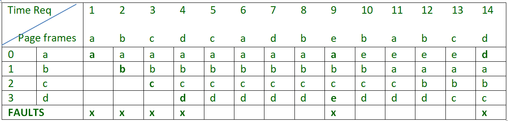

First In First Out (FIFO) Page Replacement Algorithms
This is the simplest page replacement algorithm. In this algorithm, operating system keeps track of all pages in the memory in a queue, oldest page is in the front of the queue. When a page needs to be replaced page in the front of the queue is selected for removal.
For example-1, consider page reference string 1, 3, 0, 3, 5, 6 and 3 page slots.
Initially all slots are empty, so when 1, 3, 0 came they are allocated to the empty slots> 3 Page Faults.
when 3 comes, it is already in memory so > 0 Page Faults.
Then 5 comes, it is not available in memory so it replaces the oldest page slot i.e 1.>1 Page Fault.
Finally 6 comes, it is also not available in memory so it replaces the oldest page slot i.e 3>1 Page Fault.
Example-2, Let’s have a reference string: a, b, c, d, c, a, d, b, e, b, a, b, c, d and the size of the frame be 4.

There are 9 page faults using FIFO algorithm.
Belady’s anomaly Belady’s anomaly proves that it is possible to have more page faults when increasing the number of page frames while using the First in First Out (FIFO) page replacement algorithm. For example, if we consider reference string 3, 2, 1, 0, 3, 2, 4, 3, 2, 1, 0, 4 and 3 slots, we get 9 total page faults, but if we increase slots to 4, we get 10 page faults.
In this algorithm, pages are replaced which are not used for the longest duration of time in the future.
Let us consider page reference string 7 0 1 2 0 3 0 4 2 3 0 3 2 and 4 page slots.
Initially all slots are empty, so when 7 0 1 2 are allocated to the empty slots —> 4 Page faults
0 is already there so —> 0 Page fault.
when 3 came it will take the place of 7 because it is not used for the longest duration of time in the future.—>1 Page fault.
0 is already there so —> 0 Page fault..
4 will takes place of 1 —> 1 Page Fault.
Now for the further page reference string —> 0 Page fault because they are already available in the memory.
Example-2, Let’s have a reference string: a, b, c, d, c, a, d, b, e, b, a, b, c, d and the size of the frame be 4.

There are 6 page faults using optimal algorithm.
Optimal page replacement is perfect, but not possible in practice as operating system cannot know future requests. The use of Optimal Page replacement is to set up a benchmark so that other replacement algorithms can be analyzed against it.
Theory source : https://www.geeksforgeeks.org/